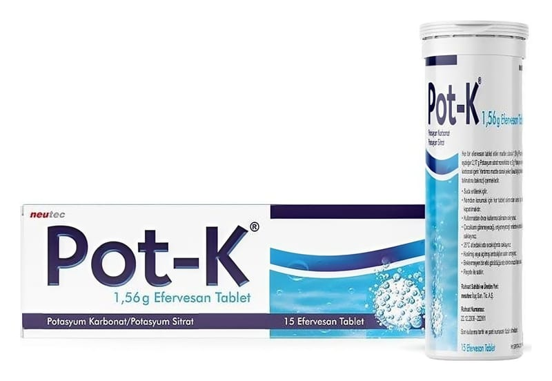

Pot-K 1,56 g Efervesan Tablet, 15 Adet

Ne için kullanılır
KT · Bölüm 1POT–K, beyaz tabletler şeklinde piyasaya sunulmuştur ve potasyum mineral desteği olarak bilinen ilaç grubuna dahildir.
POT–K, aşağıdaki durumlarda kullanılır: Kandaki potasyum miktarının azalmasından korunmada ve tedavisinde Böbrek taşı oluşumunu önlemek amacı ile (tekrar eden böbrek taşlarının yeni oluşumunun önlenmesinde)
Aşağıdaki durumlarda kan potasyum eksikliklerinin giderilmesi için: Özellikle kanda metabolizma ilişkili asit fazlalığı olan hastalarda (metabolik asidoz), önemli derecede kan potasyum miktarının azalmasında (hipokalemi 3.2 mmol/l), Sinir ve kas aktivitesinin potasyum ilişkili bozuklukları (hipokalemi nöromüsküler bozukluklar) veya kalp ritmi bozukluklarında
Digitalis türevi kalp ilaçları ile tedavi edilen hastalarda kan potasyum miktarının azalmasında (hipokalemi).
Aşağıdaki durumlarda kandaki düşük potasyum konsantrasyonlarını (hipokalemi) önlemede: Keton cisimlerine bağlı olarak kanın asit değerinin artması (ketoasidoz), örneğin diabette
Aşağıdaki durumlarda böbrek taşlarının tekrarlamasını (böbrek taşı metaflaksisi) engellemek için: Böbrek taşı (kalkul) varlığında (örn. böbrekteki küçük kanallar hidrojen iyonlarının yeterli miktarlarını atamadığında, örn. renal tübüler asidozu olanlar) Son derece düşük sitrat atılımı (çeşitli nedenlerle oluşan hipositratüri <320 mg/gün) Ürik asit taşları.